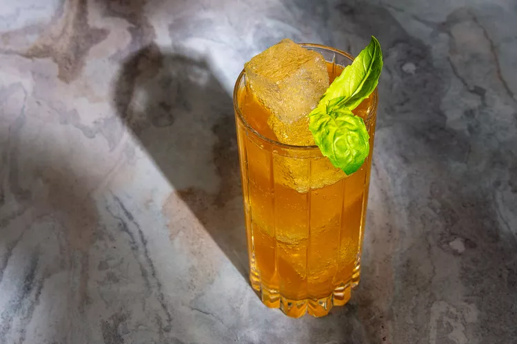

4. Irish Buck Cocktail
Light yet oaky, Irish whiskey joins tart lemon juice, honey, and spicy ginger beer in this refreshing, fizzy, basil-scented Irish Buck cocktail.

The Irish Buck follows the fundamental blueprints of a classic sweet-and-sour fizzy drink, blending oaky Irish whiskey
with tart lemon juice, honey, and zippy ginger beer for this refreshing basil-scented cocktail.
Ingredients
1 1/2 ounces Irish whiskey
- (preferably Tullamore D.E.W.)
1/2 ounce freshly squeezed lemon juice
1/2 ounce honey syrup
2 ounces ginger beer
1 basil sprig
How to prepare
Step 1
- Combine whiskey, lemon juice, and honey syrup in a cocktail shaker filled with ice. Place lid on shaker; shake vigorously.
Step 2
- Top with ginger beer, and stir briefly. Strain into a tall glass filled with ice.
Step 3
- Garnish with a basil sprig tapped lightly against the hand first to release its essential oils.
Helpful Tips
- If you love the aroma of fresh basil, take the flavor a step further and gently muddle
a few basil leaves into the bottom of the cocktail shaker before adding the lemon juice, whiskey,
and honey syrup. As you shake, the basil will infuse into the drink. Mint is also great to use here
in lieu of basil.
Enjoy your Irish Buck Cocktail!